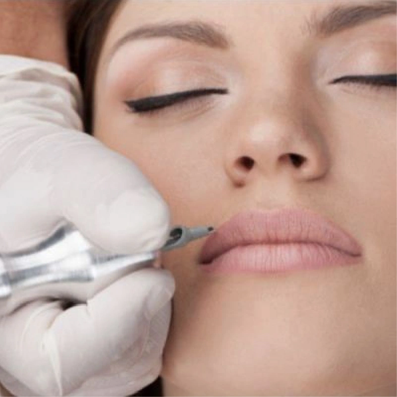

01

Lèvres
La bouche est l'atout glamour de la femme. Avec le maquillage permanent, vous pouvez agrandir des lèvres trop fines, rééquilibrer une bouche asymétrique ou lui redonner une couleur plus vive si elle a perdu de sa teinte naturelle.
En savoir plus